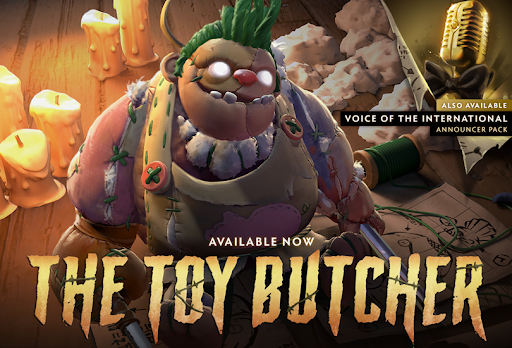
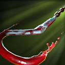
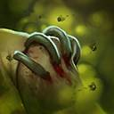
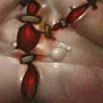
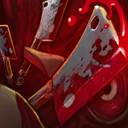

About Pudge
In the Fields of Endless Carnage, far to the south of Quoidge, a corpulent figure works tirelessly through the night—dismembering, disembowelling, piling up the limbs and viscera of the fallen that the battlefield might be clear by dawn. In this cursed realm, nothing can decay or decompose; no corpse may ever return to the earth from which it sprang, no matter how deep you dig the grave. Flocked by carrion birds who need him to cut their meals into beak-sized chunks, Pudge the Butcher hones his skills with blades that grow sharper the longer he uses them. Swish, swish, thunk. Flesh falls from the bone; tendons and ligaments part like wet paper. And while he always had a taste for the butchery, over the ages, Pudge has developed a taste for its byproduct as well. Starting with a gobbet of muscle here, a sip of blood there... before long he was thrusting his jaws deep into the toughest of torsos, like a dog gnawing at rags. Even those who are beyond fearing the Reaper, fear the Butcher.
Abilities
Launches a bloody hook at the target location. The hook will snag the first unit it encounters, dragging the unit back to Pudge. Deals damage and interrupts channeling if it is an enemy.
A toxic cloud that deals intense damage and slows movement. It harms enemy units and Pudge himself.
Gives Pudge bonus HP regen. Grants bonus strength that increases each time an enemy hero dies near Pudge. Flesh Heap is retroactive and will gain charges before it is skilled. The charges become active once the ability has been skilled.
Pudge chows down on an enemy unit, disabling it and dealing damage over time. Pudge heals himself as the damage is dealt, while pulling the target closer to himself.